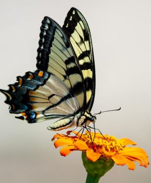
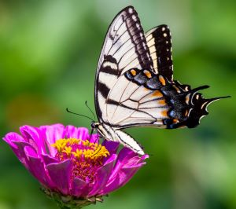

Butterflies
from family LepidopteraButterflies are insects that belong to the order Lepidoptera, which includes moths. They are known for their vibrant colors and intricate wing patterns. The butterfly life cycle includes four stages: egg, larva, pupa, and adult. Their lifespan ranges from a few days to several months depending on the species. Butterflies are important pollinators and contribute to the growth of fruits and vegetables. Conservation efforts are ongoing to protect their delicate habitats and ensure their survival.
Belonged to the order Lepidoptera, which also includes moths. Their lifespan ranges from a few days to several months depending on the species.
The weight and size of butterflies vary greatly depending on the species. Some butterflies are quite large, such as the Queen Alexandra's Birdwing, which has a wingspan of up to 30 centimeters, while others are much smaller, such as the Western Pygmy Blue, which has a wingspan of only 1.5 centimeters.
The weight of a butterfly also varies depending on the species, with some weighing only a few hundred milligrams and others weighing up to 12 grams. However, despite the size differences, all butterflies share the same delicate and intricate beauty that has captivated humans for centuries.
“Happiness is a butterfly, which when pursued, is always just beyond your grasp, but which, if you will sit down quietly, may alight upon you.”
Nathaniel Hawthorne
- Since: 50.000.000 years
- Type: Insect
- Lifespan: 4 weeks
- Adult male: 4grams
- Adult female: 55kg
- Family: Lepidoptera
Butterflies have been around for over 50 million years and are believed to have originated during the Paleocene era. They belong to the order Lepidoptera, which includes over 20,000 different species.
They are known for their colorful and intricate wing patterns, which serve as a defense mechanism against predators. They also play an important role in pollination, helping to fertilize plants and contribute to the growth of fruits and vegetables.